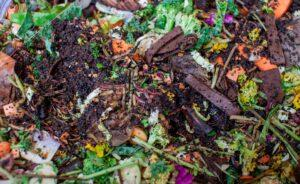
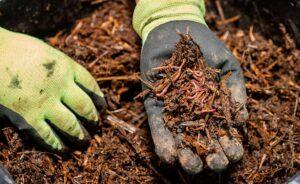
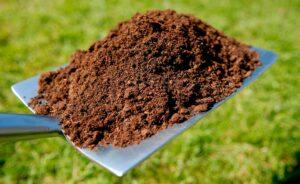

Compostaje
Las cuatro fases del compostaje El equilibrio entre nitrógeno y carbono es solo una de las claves del compostaje. Además de los dos elementos químicos que aporta la materia orgánica, el proceso se desarrolla en presencia de oxígeno y agua siguiendo cuatro fases bien diferenciadas, tal como señala el documento de la Organización de las Naciones Unidas para la Agricultura y la Alimentación (FAO).
Fase 1 Mesófila. El proceso de compostaje se inicia a temperatura ambiente y poco a poco, con el paso de entre unas pocas horas y días, la temperatura de la mezcla va aumentando debido a la actividad de los microorganismos. “Si los microorganismos no tienen oxígeno y humedad, dejan de actuar, la mezcla acaba enfriándose y el proceso de compostaje se frena”, señala Pilar Bernal. El objetivo es alcanzar entre 50 y 70 grados centígrados.
Fase 2 Termófila o de higienización. Una vez superados los 45 grados, los organismos que se desarrollan a estas temperaturas, los llamados mesófilos, desaparecen y son reemplazados por microorganismos que soportan hasta 100 grados, los termófilos. Esta temperatura se mantiene mientras continúa el proceso de descomposición de la materia orgánica y puede durar meses. Las altas temperaturas contribuyen a la higienización de la mezcla, ya que destruyen cualquier tipo de contaminante
Fase 3 Mesófila o fase de enfriamiento. “Después de la fase termófila, vuelve a bajar la temperatura. En ese momento, debemos decidir si volteamos la mezcla para homogeneizarla y volver a elevar la temperatura o dejar que esta vaya bajando”, explica Neus Vinyals. En esta fase, más cercana a la temperatura ambiente, continúa la descomposición y los organismos mesófilos se reactivan.
Fase 4 Fase de maduracion. Tras un periodo de enfriamiento, una vez la producción del compost se ha completado, llega el momento de la maduración. Esta última fase del proceso se produce a temperatura ambiente y permite la consolidación de nuevas moléculas. Durante varios meses, el compost madura y suma nuevas poblaciones microbianas, así como nuevos grupos de organismos como anélidos, ácaros o insectos que completan la transformación.